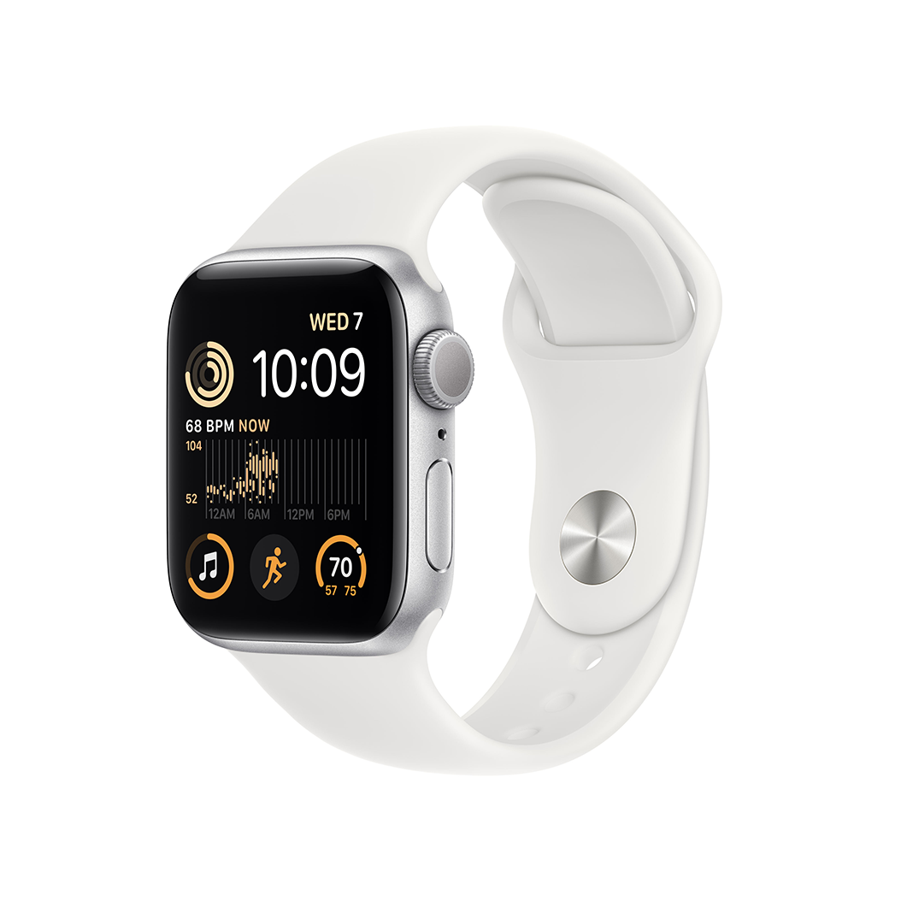

Можна закохатися.
З багатьох причин.

Основні функції для
підтримання здоров’я, безпеки
й активного способу життя.

Захіст від води


Основні характеристики
| Відповідайте на дзвінки та повідомлення просто із зап’ястя |
Отримуйте сповіщення про високий, низький і порушений серцевий ритм |
| До 20% швидший за попередній Apple Watch SE | Слухайте улюблену музику, подкасти й аудіокниги (для використання в моделях GPS) |
| Розширені функції безпеки, зокрема Виявлення падіння, Сигнал SOS і Виявлення аварій |
Захист від води |
| Відстежуйте свою активність протягом дня з Apple Watch, а потім переглядайте тенденції в додатку «Фітнес» на iPhone |
Відстеження сну дає змогу дізнатися, скільки часу ви перебували у фазах швидкого, повільного та глибокого сну |
| Покращений додаток «Тренування» з удосконаленими підходами до вправ |
watchOS 9 підтримує покращений додаток «Тренування», новий додаток «Ліки», фази сну та дає змогу краще відстежувати ритм серця |